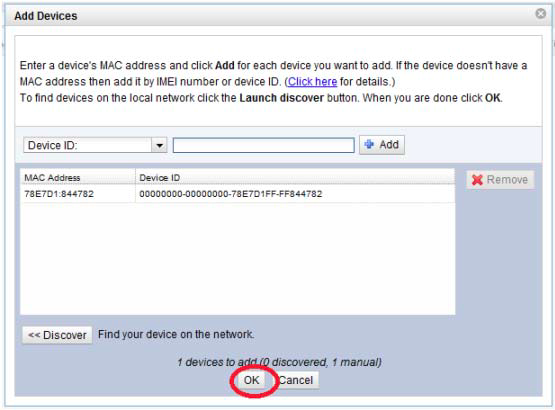

|
|
|
Getting StartedThe Getting Started process will walk you through the steps necessary to get the IIK integrated into your development environment and running applications which connect to the iDigi Device Cloud. These steps include:
Two sample applications, compile_and_link and connect_to_idigi, will be used to confirm your compilation tool chain and integration, respectively. When complete, your device will be connected to the iDigi Device Cloud and be displayed in iDigi Manager Pro. Step 1: Determine if your compiler is C89 or C99 compliantThe IIK is ANSI X3.159-1989 (ANSI C89) and ISO/IEC 9899:1999 (ANSI C99) compliant. If your compiler is ANSI C89 or C99 compliant and you are running on a 32-bit processor you can skip to the next section. If your compiler is not ANSI C89 or C99 compliant, you will have to review (and edit) public/include/idigi_types.h to adjust the data types uint8_t, uint16_t, uint32_t. Note by default these are defined for a 32-bit machine. Implement the debug macrosThe file public/include/idigi_types.h implements the two macros listed below, which are used to debug the IIK. Review these definitions and modify these for your platform: If you don't have vprintf or assert available redefine these macros to call corresponding routines for your platform. Step 2: Modify idigi_config.hOpen the file public/include/idigi_config.h to configure processor endianess. The IIK defaults to little endian. To reconfigure for big endian, comment out the IDIGI_LITTLE_ENDIAN define. Step 3: Build the compile_and_link sampleIn this step we are going to build the compile_and_link sample. This sample will verify that your build environment is set up correctly. You need to add the source files and include paths to your build system listed below. IIK InitializationThe routine idigi_init() is called to initialize the IIK, currently this is called from the routine main() in main.c; you will need to call idigi_init() at the initialization point for your application with an application callback. For the compile_and_link sample you can call idigi_init() as: // Call idigi_init() with a NULL callback to confirm your build environment only idigi_init((idigi_callback_t)0); If you are not using main() you will need to add in the call to idigi_init() where appropriate. Add the source files to your build systemThe following is a list of files required to build. There is a sample linux Makefile provided (public/run/samples/compile_and_link/Makefile) which you can use as a reference. Add the following files to your make/build system.
Add the include pathsThe following is a list of include paths to add to your system:
Add the definesThe following define is required, and used to indicate that the version of the IIK is 1.1
Build the sampleNow that you have the build environment setup, verify that you can compile and link. If you are using the Makefile provided, type make in the compile_and_link directory, otherwise execute the build for your system. If you are experiencing a build problem, double check the steps listed above. There is only one include path and two C files required to build this sample. Once the build is successful you can proceed to the next step.
Step 4: Setup your iDigi AccountCreate an iDigi AccountBefore getting started you will need to create a new iDigi account and obtain a unique iDigi Vendor ID (which is a unique identifier for your company). Later in this process, when you get the connect_to_idigi sample running successfully, you will be instructed to register your Device ID with iDigi. To create an account, navigate to https://developer.idigi.com/user_registration.do and follow the instructions to create and register your iDigi account.

Login to the iDigi Server1. Login with the user credentials you created in section Create an iDigi Account 
Obtain an iDigi Vendor ID2. If you are a first time iDigi developer, you will need to obtain an iDigi Vendor ID. To obtain an iDigi Vendor ID, select the register for Vendor ID button in the Vendor Information section on the bottom of the My Account tab after successfully logging into https://developer.idigi.com/. After selecting the register for a Vendor ID button, the page will refresh and your unique vendor ID number will be displayed in place of the button. Record the Vendor ID, you will need it later.
Step 5: Porting your platform for the connect_to_idigi sampleThe connect_to_idigi sample validates the most fundamental IIK porting aspects. If you can successfully connect and stay connected to the iDigi cloud, all other IIK functions (like sending data or firmware download) should work without failure. Go into the platforms directory and select a platform which is similar to your platform. If none of the available platforms are similar to yours, you can use the template platform. In this guide we use the public/run/platforms/linux as an example, but all platforms have the same structure. So choose a platform (or copy an existing one) and go into that directory. OS RoutinesOpen the file os.c and implement the routines listed below. For the linux platform the file is located at public/run/platforms/my_platform/os.c. Click on the routine to see a description, then modify to operate with your platform. These routines are callbacks which are described in the API section. Network RoutinesOpen the file network.c and implement the network interface routines. The network interface routines provided in the Linux platform are implemented using standard Berkeley socket calls and can be used as a reference for your platform. You may have to modify the routines in this file based on your platforms network implementation. The following is a list of network interface routines which must be implemented: Configuration RoutinesIn this step we set up the configuration routines for your platform. Each configuration item has a corresponding get routine for retrieving its value. Open the file config.c for your platform and implement the configuration routines. All configuration routines are passed in a pointer to a pointer, along with a pointer to the size. The address of the configuration item is stored in the pointer passed in, and the size is assigned to the pointer to the size variable. For example, app_get_server_url() is the routine used to retrieve the iDigi Device Cloud URL and is shown below. static int app_get_server_url(char ** url, size_t * size) { #error "Specify iDigi Server URL" // This #error must be removed to compile // Statically allocated string containing the sever URL static const char const *idigi_server_url = "developer.idigi.com"; // Fill in the pointer with the address of the URL in memory *url = (char *)idigi_server_url; // Fill in the size *size = strlen(idigi_server_url); return 0; }
The following is a list of configuration routines which need to be implemented for your platform, please review each routine:
iDigi InitializationAs in the compile_and_link sample, you must make a call to idigi_init(). However, in this sample, you will execute the code, making all the networking, configuration, and operating system callbacks. The idigi_init() call, must now include a proper callback: // Initialize the IIK with the application callback idigi_handle = idigi_init((idigi_callback_t) idigi_callback); and placed in location capable of starting a network client. Its recommended that you use the code inside main() and cut and paste, as is, into an appropriate spot. In the Linux platform provided, the routine main() creates a thread which then calls idigi_run(). You will need to set up a similar thread in your environment (or call idigi_step()) periodically. This thread is shown below: static void * idigi_run_thread(void * arg) { idigi_status_t status; APP_DEBUG("idigi_run thread starts\n"); // Run the IIK, this will only return on an IIK abort status = idigi_run((idigi_handle_t)arg); APP_DEBUG("idigi_run thread exits %d\n", status); pthread_exit(arg); }
Step 6: Setup your build environmentAdd the source files to your build systemTo build the connect_to_idigi sample you will need to add the files shown below to your build environment.
Add the include pathsThe following is a list of include paths you will need to add to your build system:
Step 7: Build the connect_to_idigi sampleNext, build the sample. If you are running on Linux you can simply type make in the directory public/run/samples/connect_to_idigi, if you are not using Linux then you will have to build for your environment. Step 8: Run the connect_to_idigi sampleThe name of the executable generated by the Linux Makefile is called idigi. In Linux, type ./idigi from a console to execute the program.
Example output from a successful run of connect_to_idigiBelow is the standard output shown for a successful connect_to_idigi run: >./idigi Start iDigi initialize_facilities: callback supports 13 facility initialize_facilities: callback supports 14 facility idigi_run thread starts application_run thread exits 0 idigi_run thread starts dns_resolve_name: ip address = [50.56.41.153] network_connect: connected to [developer.idigi.com] server communication layer: Send MT Version communication layer: receive Mt version communication layer: send keepalive params communication layer: Rx keepalive parameter = 60 communication layer: Tx keepalive parameter = 90 communication layer: Wait Count parameter = 5 initialization layer: send protocol version initialization layer: receive protocol version Security layer: send security form security layer: send device ID = 00 00 00 00 00 00 00 00 00 40 9D FF FF 43 23 17 security layer: send server url = developer.idigi.com discovery layer: send vendor id = 01 00 00 1A discovery layer: send device type = connect to idigi DVT fw_discovery: No target supported Connection Control: send redirect_report get packet buffer: send pending Connection Control: send redirect_report Connection Control: send connection report get_ip_address: Looking for current device IP address: found [2] entries get_ip_address: 1: Interface name [lo] IP Address [127.0.0.1] get_ip_address: 2: Interface name [eth3] IP Address [10.52.32.71] get_ip_addr: Device IP address = 0A 34 20 47 get_connection_type: connection type = 0 get_mac_addr: MAC address = 00 40 9D 43 23 17 discovery layer: send complete idigi_facility_layer: receive data facility = 0x00c0 rx_keepalive_process: time to send Rx keepalive Locating helpful error info in IIK standard outputWhen an error occurs, since APP_DEBUG is defined as printf in your platform.h file, critical errors are displayed via the idigi_config_error_status callback. Below is an example with an output showing an error related to the idigi_config_server_url callback. By searching through your application code, you can easily trace this callback to the app_get_server_url() porting function: >./idigi Start iDigi initialize_facilities: callback supports 13 facility initialize_facilities: callback supports 14 facility idigi_run thread starts application_run thread exits 0 idigi_run thread starts idigi_error_status: Config - idigi_config_server_url (3) status = idigi_invalid_data_range (4) idigi_run thread exits 4 > Given this output, a thorough code review of the app_get_server_url() function should reveal a porting defect. Add your Device to the iDigi Device CloudThe next several sections walk through the steps required to add your device to the iDigi Device Cloud.

Within the Add Devices dialog click the Add Manually>> button. 
Select Device ID: from the drop-down menu. 
Enter the Device ID for your device then click the Add button. 
Click the OK button to add your device to the iDigi Device Cloud.

Viewing Results on the iDigi Device CloudClick the Refresh button. The device will reconnect to the iDigi Device Cloud. If successful your device Status will show connected. You can now communicate with your device over the iDigi cloud. The next step is to integrate in one of the samples to add in more functionality to your application.

Step 9: Next StepsNow that you have a basic sample up and running with the iDigi Device Cloud, you can port in more functionality to your application. We first suggest reading the API section of the documentation and then select a sample which has the functionality you need. |